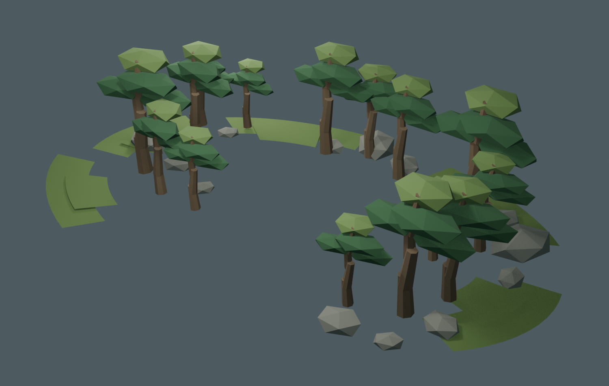

苔庭五区隐蔽环境
鲲与背上的苔庭不是孤立漂浮物。五个原作场景母题以不均匀外圈覆盖其轮廓，中央保留空庭、战斗站位与起飞揭示空间。鲲抬升时，外围环境作为苔庭岛的子节点一同升空。

五个外围分区
- 入口苔径：低矮苔坡与入口松组
- 主石之庭：背侧石组与收束松
- 枯瀑之庭：侧翼岩脊，不添加真实瀑布
- 苔海岛群：水侧遮蔽与开阔苔面
- 回望石组：后侧观景石与稀疏树组
空庭没有被填满；它仍服务蓝盔伏击、重甲登陆与鲲起飞的可读性。
已导入 Godot：资产清单 · Godot 接入脚本 · 苔庭之战总览